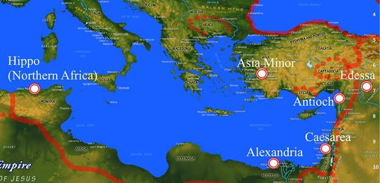

The Catechetical Schools
Catechetical school, in early Christianity, a type of educational institution with a curriculum directed toward inquirers (especially those trained in the Greek paideia, or educational system) whose aim was to gain a greater knowledge of Christianity and eventually, perhaps, baptism into the Christian community. Located in such centres as Alexandria, the catechetical schools became prototypes for later Christian institutions of higher learning. - Encyclopaedia Brittanica
In the early church, catechetical schools developed to educate people on the Christian faith and served not only an evangelistic purpose, but also trained church leaders and defended the faith against attacks from pagan philosophers, gnostic heresies, and the like. These theological schools were the places where church leaders were educated, similar to modern seminaries or universities. They also, as we just read, served as an inspiration and model for the development of these modern higher learning institutions. As such, they were the places where the most educated and influential Christians of the early church (often referred to as the Church Fathers), did much of their learning and work.
Because of their importance to early church thought, it is essential to examine what these schools and their leaders thought about universal restoration as well as other views of judgment. According to Dr. Edward Beecher’s scholarly work, History of Opinions on the Scriptural Doctrine of Retribution, the following was the factual state of the early catechetical schools on this issue:
It was, in brief, this: There were at least six theological schools in the Church at large. Of these six schools, one, and only one, was decidedly and earnestly in favor of the doctrine of future eternal punishment. One was in favor of the annihilation of the wicked. Two were in favor of the doctrine of universal restoration on the principles of Origen, and two in favor of universal restoration on the principles of Theodore of Mopsuestia. It is also true that the prominent defenders of the doctrine of universal restoration were decided believers in the divinity of Christ, in the Trinity, in the incarnation and atonement, and in the great Christian doctrine of regeneration; and were, in piety, devotion, Christian activity, and missionary enterprise, as well as in learning and intellectual power and attainments, inferior to none in the best ages of the Church, and were greatly superior to those by whom, in after-ages, they were condemned and anathematized (Beecher 1878, Chapter 22).
Beecher makes several key points in this paragraph. Of primary importance is the understanding that most of the catechetical schools of the early church favored universal restoration. This is in stark contrast to the audacious and inaccurate claim made by Mark Driscoll that the church has consistently held this doctrine to be heretical. Instead, it was a majority position of the early catechetical schools and was held to by very many of the early Church Fathers (as we will soon see by examining their own statements in primary source documents). According to Beecher, these defenders of universal restoration held orthodox views and had exemplary Christian character, knowledge, and zeal for God. As we will soon learn, many of these believers in universal restoration were pillars of orthodoxy who were instrumental in the development and perpetuation of biblical Christian doctrine.
This being said, Beecher also makes it clear that there was diversity of opinion in the early church regarding this issue. One of the schools was annihilationist, believing that the wicked would be destroyed, and only one held to belief in eternal punishment. For those of you who like statistics, that means that over 83% of the early catechetical schools did not espouse the “traditional” doctrine of eternal conscious torment.
So, what were these schools and where were they located? Beecher lists the following six schools:
1. Alexandria (Universalist)
2. Caesarea (Universalist)
3. Antioch (Universalist)
4. The Eastern Syrian great theological school alternating location between Edessa and Nisibis (Universalist)
5. Asia Minor (Annihilationist)
6. North Africa (Eternal Torment)
Here is a map showing the locations of these schools (with the North African school represented by Hippo, where the most prominent defender of eternal conscious torment, Augustine, resided):

Map modified to show the locations of the theological schools. Original source here .
Seeing the locations of the catechetical schools on a map for the first time was quite an enlightening experience for me. I wonder if it will have the same effect for you. Study the map for a bit. What do you observe?
As for me, one of the first things that stood out was the distance of Hippo from the other prominent catechetical schools. Those who held to eternal torment were geographically far from other believers. To understand this distance more fully, I looked up directions from Alexandria to Hippo (since Alexandria is geographically closest by land). As it turns out, the distance from Alexandria to Hippo Regius (modern day Annaba, Algeria) via the International Coastal Rd/Route 40M is 2,774.0 km (approximately 1,724 miles). This shows the travel route by road: link to route . It is about as direct a route by land as one could imagine and is estimated to take about 35 hours with modern transportation methods. Now, imagine how long it would take with ancient transportation methods. Travel could have also taken place by sea, but again it is quite apparent from looking at the map that this too would have been quite a journey. The effect of this distance certainly would have limited the ability of theologians of the North African School to interact in fellowship and discussion with Christians of the other schools. Their theological views, therefore, developed in some measure in isolation from the rest of the Church body.
But the North African school was not just geographically isolated, but also linguistically and culturally isolated. In terms of language, all the other schools natively spoke Greek, the language in which the New Testament was written. Because of this, they were able to interpret the biblical texts according to their natural original meanings, without needing translation. In contrast, the North African school had Latin as its native tongue. In general, its members therefore had to rely on translations, or less than perfect understandings of the foreign Greek language of the New Testament.
Culturally, most of the schools approached the biblical texts with a Greek philosophical and metaphysical mindset, whereas the North African school interpreted the texts from a Roman legal perspective. According to Beecher, one of the most striking characteristics of the Latin-speaking North African school is “the fact that their theology was developed by them under the influence of the great system of Roman law, to which they had access in the Latin language" (Beecher 1878).
Beecher continues to expand on this cultural difference, beginning with a reference to the work of Sir Henry James Sumner Maine, Ancient Law :
Maine, in his history of ancient law, has not hesitated to say that the difference between Eastern and Western theology is accounted for by the fact that, in passing from the East to the West, theological speculation had passed from a region of Greek metaphysics to a climate of Roman law. The highest energies of the Roman mind had been employed in developing their wonderful system of law.
Hence in this school were laid the foundations of that Latin legal and anthropological theology which through Augustine gained such ascendency [sic] in Europe, and gave rise to Calvinism and the systems which have reacted from it. The fact that it was a legal school, and that it took a strong, deep hold of the question of human depravity and regeneration, gave it peculiar elements of power…
The metaphysical energies of the Greek mind developed themselves in the subtile [sic] questions raised by the doctrine of the Trinity and the person of Christ, and were so absorbed by these that they never entered into the great legal questions which were the staple of Western theology. In particular, they did not enter into any profound investigations as to law, penalty, atonement, pardon, and retribution. But, as we have seen, decidedly the most powerful minds adopted the doctrine of universal restoration, and those who did not adopt it entered into no controversy about it with those who did. In the African school all this was reversed. From the very beginning they took strong ground in favor of the doctrine of eternal punishment, as an essential part of a great system of law of which God was the centre (Beecher 1878, Chapter 28).
Beecher and Maine’s thoughts on the cultural and theological differences of the Latin school versus the Greek schools seem quite accurate. Those of the Latin school of North Africa were influenced by the Roman legal system (and unfamiliarity with the Greek language of the New Testament) in their interpretations of scripture, whereas the Greek schools approached the text more philosophically (and with a clear understanding of Greek language and cultural nuances and symbols).
In terms of Roman legal influence, it is no secret that the Roman system of law was harsh and unyielding. One need not look any further than crucifixion to demonstrate this fact. As a method of execution, it was specifically designed to be prolonged, shameful torture. It is rather curious that the school of North Africa would adopt the very mindset of those who crucified their Lord by interpreting the good news as eternal, shameful torture for most people. Nevertheless, this seems to have been the case.
In contrast, in the Greek-speaking schools, “decidedly the most powerful minds adopted the doctrine of universal restoration, and those who did not adopt it entered into no controversy about it with those who did.” This statement is quite significant because it not only conveys the fact that the deepest Christian thinkers (who were also native-speakers of the biblical language) believed in the ultimate salvation of all people, but also shows that those who disagreed did not think of those Christians as heretical. Instead, we will soon see that they were highly influential and deeply respected. In fact, many of these powerful minds are still venerated as saints and/or doctors of the Church in Christian traditions that bestow such honors. So, who were these powerful minds?
This is the question that we will next examine in great detail by examining the historical facts of their lives and by reading their actual words in primary source documents. As we do so, it will become quite apparent that those who wish to claim that universal salvation has been consistently held as heretical are basing this assertion on ignorance of historical facts. The evidence screams the opposite. To be clear, the views of very many of the early Church Fathers in favor of universal restoration do not prove that it is true. Their views do prove, however, that it is not a new idea. Rather, it would be more accurate to claim it as the dominant original idea of the early Church, derived from reading the New Testament in its original Greek. Their testimony is therefore critical for dispelling modern myths and rumors that such a view is heretical and has always been considered as such. It is also highly useful in informing our own interpretations of scripture by giving us insight into how it would have been understood by its original audience, the ancient Greeks. The Greek cultural and linguistic identity of these early church fathers is therefore invaluable to understanding how to interpret biblical texts from their perspective, rather than from our own, which is some twenty centuries removed from the culture and language of the New Testament writers.
To this end, let’s now begin examining the lives and writings of some of the early church fathers from the catechetical schools we have described.
Beecher, Edward. History of Opinions on the Scriptural Doctrine of Retribution. Chapter 22. D. Appleton, 1878, http://www.tentmaker.org/ books/Retribution/ retribution22.htm
Beecher, Edward. History of Opinions on the Scriptural Doctrine of Retribution. Chapter 28. D. Appleton, 1878, http://www.tentmaker.org/ books/Retribution/ retribution28.htm